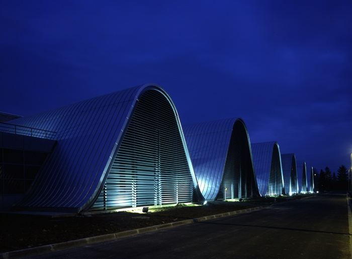

Test your
Graphicacy
Lorenzo Ciccione, Mathias Sablé-Meyer & Stanislas Dehaene
UniCog, NeuroSpin
Participez en français
Participate in English
Partecipa in italiano
Participar en español
Participar en Português
参加中文版实验
... help us translate? ...